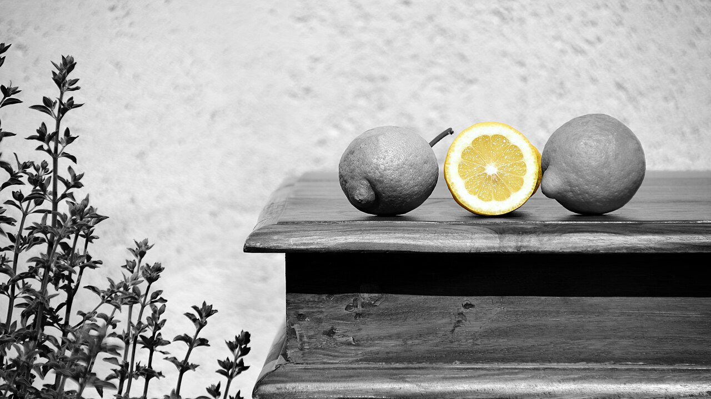
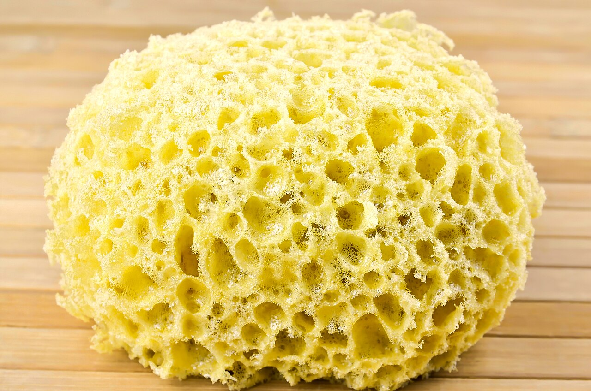

Nồi chiên không dầu bám mùi khét — cách khử mùi và vệ sinh đúng

Nồi chiên không dầu bám mùi khét — cách khử mùi và vệ sinh đúng: nồi chiên không dầu bám mùi khét là chuyện thường gặp sau nhiều lần chiên: dầu bắn lên thanh nhiệt rồi cháy bám lại, mùi khét ám vào khoang nồi, lần sau chiên món gì cũng lẫn mùi. 4 cách dưới đây khử mùi khét tận gốc — bằng chanh, giấm và baking soda, vệ sinh khay với thanh nhiệt, rồi hong khô nồi trước khi cất.
Chiều qua chiên gà bằng nồi chiên không dầu, sáng nay mở nồi ra đã ngửi thấy mùi khét còn vương trong khoang. Chiên khoai tây cho bữa trưa thì khoai cũng lẫn mùi khét. Mùi khét này không hết chỉ bằng cách rửa khay — nó bám trên thanh nhiệt và khắp khoang nồi. Làm 4 cách dưới đây theo thứ tự, mùi khét giảm hẳn sau một lần làm.
Cảnh báo an toàn trước khi làm gì
Vệ sinh nồi chiên không dầu phải đợi nồi nguội hẳn và rút điện ra trước — thanh nhiệt trên nóc khoang còn nóng thì chạm vào bỏng tay. Không nhúng thân nồi vào nước, không xịt nước thẳng vào thanh nhiệt hay lỗ thông hơi — phần điện trong thân nồi gặp nước sẽ hỏng. Không dùng búi sắt hay vật sắc chà khay và khoang nồi: lớp chống dính xước thì nồi nhanh hỏng và thức ăn dính chặt hơn. Nồi có mùi khét kèm khói, tia lửa hay tiếng nổ lách tách thì ngừng dùng ngay và mang đi bảo hành, không tự sửa.
1. Khử mùi khét bằng chanh — vắt chanh vào nước, bật nồi vài phút
Cắt đôi một quả chanh, vắt nước cốt vào một bát nước nhỏ rồi đặt bát vào khay chiên, hoặc xếp vài lát chanh vào khay. Bật nồi ở nhiệt thấp, để chạy vài phút cho hơi nước chanh lan khắp khoang nồi — hơi chanh át mùi khét và làm mềm lớp dầu bám. Tắt nồi, đợi nguội rồi lấy bát ra, lau khoang nồi bằng khăn ẩm. Chanh hết mùi nhanh mà không để lại mùi hóa chất trong nồi, lần sau chiên món gì cũng không lẫn mùi lạ.

2. Khử mùi bằng giấm trắng và baking soda — ngâm khay, lau khoang nồi
Mùi khét còn nặng thì dùng giấm trắng với baking soda: pha giấm với nước ấm theo tỉ lệ khoảng một phần giấm ba phần nước, ngâm khay và rổ chiên trong đó một lúc cho dầu bám mềm ra rồi rửa lại bằng nước rửa chén như thường. Khoang nồi thì rắc một ít baking soda lên khăn ẩm rồi lau khắp mặt trong — baking soda hút mùi khét bám trên thành nồi. Lau xong thì lau lại bằng khăn sạch nhúng nước lã, để khoang nồi khô ráo rồi mới dùng tiếp.
3. Vệ sinh khay chiên và thanh nhiệt — chỗ bám mùi khét hay bị bỏ quên
Khay chiên và rổ chiên tháo ra rửa riêng bằng nước rửa chén và miếng bọt biển mềm — dầu cháy bám trong khe rổ là chỗ giữ mùi khét lâu nhất. Thanh nhiệt trên nóc khoang nồi mới là chỗ nhiều người bỏ quên: dầu bắn lên thanh nhiệt rồi cháy bám lại, lần nào chiên cũng tỏa mùi khét. Đợi nồi nguội hẳn, rút điện ra, dùng khăn ẩm vắt khô lau nhẹ thanh nhiệt cho sạch lớp dầu cháy — lau nhẹ tay, không dùng vật sắc chà vì thanh nhiệt mỏng, xước là hỏng. Lau xong để nồi khô hẳn rồi mới cắm điện dùng lại.

4. Hong khô nồi trước khi cất — cất khi nồi còn ẩm thì mùi quay lại
Rửa xong mà cất nồi ngay khi còn ẩm thì mùi quay lại rất nhanh: khoang nồi đóng kín, hơi ẩm đọng lại, mùi khét cũ và mùi ẩm trộn vào nhau. Sau khi rửa, úp khay và rổ chiên lên giá cho ráo nước, lau khô khoang nồi bằng khăn sạch. Bật nồi không tải ở nhiệt thấp vài phút cho khô hẳn bên trong, hoặc để nồi hé nắp ở chỗ thoáng cho tới khi khô ráo rồi mới cất. Nồi khô ráo thì lần sau mở ra không còn mùi, chiên món mới cũng không lẫn mùi cũ.
Giới hạn cần nhớ
Bốn cách trên xử lý mùi khét bám trong nồi chiên không dầu — không sửa được nồi hỏng: thanh đốt cháy, quạt gió không chạy, nồi có mùi khét kèm khói hay tia lửa thì ngừng dùng và mang đi bảo hành. Nồi bám đầy dầu mỡ thì là chuyện khác, không phải mùi khét — xem bài riêng: Nồi chiên không dầu bám đầy dầu mỡ: 4 cách vệ sinh sạch mà không hỏng lớp chống dính. Đáy nồi cháy đen thì xem thêm: Tẩy đáy nồi cháy đen: 5 cách ngâm là sạch, không cần chà xát đau tay.
Kết lại: lần tới nồi chiên không dầu bám mùi khét, cứ nhớ 4 cách: khử mùi bằng chanh, khử mùi bằng giấm trắng và baking soda, vệ sinh khay chiên với thanh nhiệt, rồi hong khô nồi trước khi cất — làm đủ 4 cách, mùi khét giảm hẳn mà lớp chống dính vẫn nguyên.
- Muốn bài viết có thêm người hỏi mua? Xem các gói tăng tương tác tại viettuongtac.com.
- Cần một website bán hàng để khách xem mẫu và đặt hàng dễ hơn? Xem mẫu tại webkhoinguon.com.


💬 Bình luận
Đang tải bình luận…